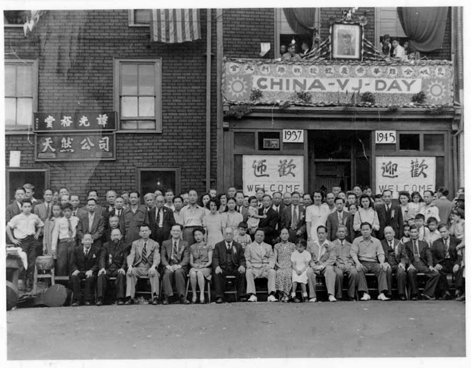
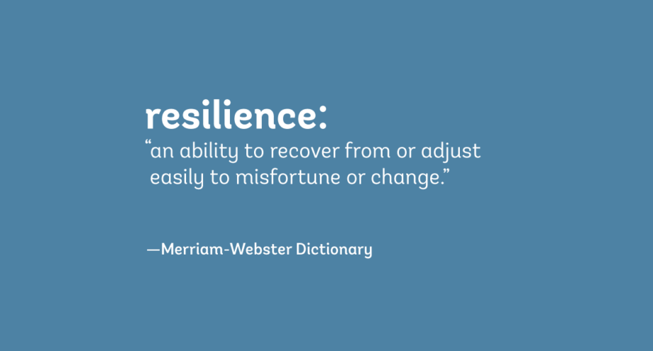

Journal Entry #1: Why The Illegal?
Number 1 is the audiobook version. There isn’t much detail given on the cover, but it makes you wonder what is going on. It sparks the question: How does a running man relate to the word “illegal” if at all? Number 2 is the cover art for the book. It gives much more detail here; we can see a man running on a hill. However, it seems like he is under some sort of spotlight, as he is surrounded by shadows.
There are quite a few reasons why I chose The Illegal as my book, and the title has to be one of them. “Illegal” is usually a word that’s weaponized in real life, and seeing it turned into a human story sounds extremely interesting. On top of this, Lawrence Hill is a big name, as I have read his other books like The Book of Negroes. I admire his handling of displacement and resistance themes. By reading some summaries, I have come to know a little more about the book. The story is about Keita “running” for his life, as he leaves his country for “Freedom State” as an undocumented immigrant. After reading the summary, it almost reassured me that this is the book that I want to read, simply because it greatly relates to the world right now, with the U.S. establishing the ICE (Immigration and Customs Enforcement) to clean out all illegal immigrants, I am very curious to see if the ending of Keita will be similar to what is going to happen in the U.S.
Journal Entry #2: Character Development
First Third
In the opening third of The Illegal, Keita Ali is revealed to be a driven but sheltered youth whose love of running borders on obsession. From age ten, his secret devotion to training (with “Meb Supremes” hidden in his knapsack), he shows his single-minded ambition and willingness to defy authority in pursuit of his dream. This was proven in the line, “he was so in love with his Meb Supremes … he had left the house with them hidden in his knapsack.” (Hill 13)
As an adult, this determination becomes tinged with fear and self-doubt when he competes under an alias. After the Buttersby Marathon, the sports page captures his tension and fear: “Worry framed his eyes and furrowed his brow” upon seeing his photograph in the newspaper under “Roger Bannister”. (Hill 144)This moment reflects Keita’s internal conflict, as his talent brings him various opportunities, but also exposes him to the public and potentially his identity as an “illegal immigrant.”
Second Third
Entering the second third of the novel, Keita’s character deepens from a solitary athlete to someone who builds community bonds. In AfricTown, he is praised by locals who chant, “Keita Ali, go for gold!” and offer him water and oranges; these gestures gave him a sense of belonging beyond survival, this was shown in the line, “There was no gold to run for, but it was hard to explain … Children stood by the roadside and clapped.” (Hill 285) Simultaneously, his weakness also emerges in scenes with Mrs. Ivernia Beech. After fainting from exhaustion, he wakes up on her couch and must rely entirely on her goodwill. “You gave yourself a nasty bump on the head … Do you know who you are?” “Yes … Keita Ali” (Hill 206) Through this reliance, Keita learns to trust and to accept help, which marks his growth from self-sufficiency towards interdependence.
On the political side, Keita’s hesitance to join Lula’s demonstration, “I can’t come to a political demonstration…All you gotta do is run up on stage in your shorts and wave!” This shows Keita’s cautious moral compass; he fears drawing too much attention, yet he understands the power his fame holds for a good cause.
Final Third
In the last part of the novel, Keita fully transitions into an agent of his own fate. He confronts the Immigration Minister Calder as he refuses to be processed passively; “Don’t you have something for me?” He demands, as he insists on reciprocity rather than charity. This assertiveness contrasts sharply with his early fear and trepidation. During the Giant Valley Half-Marathon, he not only runs for the prize money but also flees from authorities; “He hurdled the barrier and kept running.” (Hill 322) This shows his unshakable will to survive and protect his sister above everything else. As the novel comes to an end, Keita’s journey from an isolated warrior to a courageous advocate is done; he uses his athletic capabilities and newfound political savvy to challenge an unjust system, and he puts himself in as both a champion on the track but also a fighter for human dignity.
Journal Entry #3: Novel Background
Lawrence Hill is the son of a black American father and a white American mother. Both of his parents were human rights activists; his father, Daniel Hill, was the chair of the Ontario Human Rights Commission and co-founded the Ontario Black History Society, and his mother was more on the anti-discrimination law side. With this family background, it's almost certain that Lawrence Hill will write novels that debate racial justice, racial identity, and belonging. Lawrence started his career as a journalist, and with many volunteer experiences, it shaped him to become a novelist. (One funny thing is that he used to dream of becoming an Olympic runner, which exactly resembles Keita Ali in The Illegal.) The Illegal was written around 2013-2015, this era had a high refugee crisis. The UN reported nearly 60 million people displaced by war and persecution in 2015, which is the highest record ever in human history. In the novel, Hill linked these events in, calling Canada’s slow refugee process “obscene and heartbreaking”, he also urges the nations to open their doors more widely. However, even during those times, many countries still established anti-immigrant policies, which further fueled Hill’s anger, and it is observable in the novel: “We see people drowning in boats…desperate because it’s better to die trying than to die at home.” (Hill 388) The novel's setting takes place in 2018 with 2 fictional nations, Zantoroland and Freedom State.
"To gaze into another person's face is to do two things: to recognize their humanity and to assert your own." (Lawrence Hill 2017)
There is 1 significant link being “AfricTown”, this is a reference to Africville, where all undocumented immigrants hide. However, this was later destroyed by the Canadian government in the late 1960s. By creating these settings, it’s almost 100% that Hill is talking about the global injustices.
Journal Entry #4: Resilience
Keita Ali’s resilience shone most vividly in Freedom State’s detention center scene. As he faced humiliating processes and dehumanizing questions, he refused to collapse. Instead, he stands tall and demands dignity: “I am not asking for mercy, Minister. I am asking for rights. I am not an animal” (Hill 376). By putting his humanity in the face of a system built to strip it away, Keita perfectly defines resilience, choosing to resist rather than submit.
Lawrence Hill wonderfully used Keita’s unbreakable spirit to show the novel’s larger theme of justice and belonging. Every time Keita puts everything on the table --- slipping past border control, hiding his nationality, and so much more --- his running becomes a protest; it’s no longer a simple act for survival, but rather a statement that no wall, policy, or prejudice can kill a person’s will to live with dignity. Throughout the novel, this emphasis on self-worth ties directly into Hill’s critique of global refugee policies: resilience is both the personal armor and the collective weapon of the displaced and powerless. Through Keita’s journey, Hill proves that resilience is at once an individual choice and a catalyst for social change. Keita’s refusal to see himself as “an animal” transforms a private act of endurance into a public demand for equality. In the novel’s climax, where he confronts the Minister on national television, it is his resilient voice that forces all viewers to recognize the humanity of the world’s “illegals.” Hill proves that while resilience alone cannot dissolve unjust systems, it is the unchangeable spark that lights broader movements for justice.Journal Entry #5: Literary Lenses
Socio‑Economic Lens
Through a socio-economic lens, The Illegal contrasts the stark disparities between Zantoroland and Freedom State by using Africtown as a mirror of systemic inequality. Earl on, Hill shows how Freedom State’s wealth was built on plantation economies and exclusionary policies, this was evident in the line: “AfricTown told you all you need to know about Freedom State. An island continent --- its citizens, if you exclude the residents of AfricTown --- were among the wealthiest in the world.” (Hill 92) By comparing the hyper-commodification of elite runners with the shantytown’s squalor, Hill shows how capitalism and racism intertwine; Zantorolanders are constantly needed for cheap labour while being violently treated when inconvenient. Later in the novel, the improvised home in AfricTown-- shipping containers “painted wild colours” used as living quarters-- drives home the poverty endured by every single undocumented migrant: “It looked poorer than Zantoroland. In his own country, even villagers with no education and minimal income kept clean homes and outhouses.”(Hill 182) Keita understood this inequality, and it deepened his empathy, which fueled his moral reckoning. This is the perfect image showing how socio-economic forces can drastically change individual identity and community solidarity.
Psychological Lens
Looking at the novel psychologically, Keita’s journey creates a map that shows inner struggle between self-reliance and the need for human connection. After his father’s kidnapping, Keita clings to Yoyo’s final words, “The time has come. Call the marathon agent.” (Hill 46) as well Keita also obsessively pores over his father’s note “to comfort himself,” reading them out loud in his father’s voice and accent.” This “ritual” shows Keita’s use of his memory as a coping mechanism against the future uncertainties. Moreover, the constant threat of deportation in Freedom State fractures Keita’s sense of self. When a young man warns him, “Police raid it, looking for illegals. I wouldn’t go there until things settle down.” (Hill) Keita’s shaken response reveals the deep-seated anxiety about belonging: he must suppress not only his name but his very own existence. Through these psychological layers, I can see how Hill portrays trauma’s corrosive impact on identity and the resilience that’s needed to reclaim agency.
Archetypal Lens
When applying the archetypal lens to see this novel, we can see that Keita functions as the classic hero that’s drawn from obscurity into a quest for justice. His “call to adventure” begins when he wins the Buttersby Marathon under an alias; this is the act that both elevates him into a higher status, but also marks him for exile. Yoyo Ali is his mentor archetype; he prepares Keita with the last charge (“Call the marathon agent”) that propels him into the wider world. Keita’s experience in AfricTown perfectly resembles the “belly of the whale” stage: he enters a realm where social norms invert, creating alliances (Mrs. Ivernia, Lula) and emerges transformed. Finally, as the novel ends, his confrontation with Minister Calder, where he demands dignity rather than charity, is the “atonement with the father” stage, as he confronts the power that completely shaped his fate in the past years. Through these archetypal patterns, we can further understand how Lawrence Hill universalizes Keita’s struggle, which shows him both as an individual hero and a collective emblem of displaced peoples.
Journal Entry #6: Text-to-Text Connections
The Hamilton Mixtape: “Immigrants (We Get the Job Done)” (2015)
The Hamilton Mixtape included an anthem of “Immigrants (We Get The Job Done)”. The song’s main message is to celebrate refugee and immigrant resilience. It talks about how America “is both founded on and fueled by immigrants’ hard work and ingenuity.” A Grammy article later explained that the lyrics “shine a light on the struggle immigrants still face,” calling out how newcomers power society. This perfectly mirrors The Illegal, as Keita and his family must flee persecution and rebuild their lives. Both works show immigrants gaining strength from their heritage and contributing to their new home country.
Disney’s Encanto (2021)
Disney’s 2021 film Encanto tells a story of a Colombian family with magical gifts. In its backstory, Mirabel’s grandparents fled violence during the civil war, becoming refugees. As one analysis notes, “Mirabel’s grandparents fled their home many years ago because of war,” and Mirabel’s grandfather was killed during the flight. The film talks about family bonds and surviving trauma --- themes that are almost identical to The Illegal’s focus on displacement and identity. Like Keita in The Illegal, Encanto’s characters carry memories of exile; their family’s story shows how forced migrations leave generational trauma on identity and belonging.
Childish Gambino: “This Is America” (2018)
In mid 2018, Childish Gambino’s music video for “This Is America” went viral for its raw commentary and display on U.S racial violence. Critics note it is “laden with metaphors about race and gun violence in America.” The video contrasts cheerful dancing with sudden shootings, giving all viewers a sudden change of image and forcing everyone to understand the systemic brutality. Though there wasn’t much about immigration on the song, its expose of oppression echos The Illegal’s critique of injustice. Both works use imagery to show that violence and racism are deeply entrenched in society.
Journal Entry #7: Sentence Starter
“I think the relationship between Keita and Mrs. Ivernia Beech is interesting because…”
I think the relationship between Keita and Mrs. Ivernia Beech is very interesting, as it shows that true resilience often requires trusting others. At first, Keita arrives at her doorstep, terrified and alone, as he is an “illegal” who must conceal his identity to survive. However, Mrs. Beech treats him with kindness, refraining from judgment and simply asking, “Do you know who you are?” (Hill 112). In that moment, Keita’s defence softened; he allows himself to rest and to speak his name out loud, reclaiming a piece of self-worth that the immigration system has stripped away. Through her compassion, Mrs. Beech becomes a mirror for Keita’s humanity, constantly reminding him that asking for help is not a weakness but a courageous act. As their bond deepens, Keita begins to understand that resilience is not just about personal grit but also the networks of care we build for others around us. When Mrs. Beech shares her modest meal of beans and rice and presses him to eat, she’s not only nourishing his body, but rather his soul. In caring for Keita, Mrs. Beech models a resilience rooted in empathy, one that transforms individual survival to collective persistence. By the time Keita returns on the track, he’s carrying more than the dreams of his own, but also the encouragement of everyone around him.
Journal Entry #8: Ending Reflection
I find the ending of The Illegal both triumphant and open-ended. After Keita secures legal status and wins the Grant Valley Half-Marathon, Hill reminds us that Keita’s running has evolved from a personal habit into an act of survival and solidarity. As Keita goes past the finish line, he realizes that “he ran not for speed, but for survival.” (Hill 390) In that moment, the focus shifts; the race is no longer about winning, it's about proving to himself and everyone in the world, a displaced person can still reclaim both dignity and recognition. However, Hill clearly left room for continuation. The novel ends with Keita already eying his next race; he is fully aware that the legal victory is but one step in a much longer journey toward justice, a journey for his sister, for the AfricTowns residents, and for the refugees worldwide. I support this choice, as in real life, no single victory can erase systemic barriers.
Journal Entry #9: Why Teach The Illegal
- Humanizes Refugees:This novel humanizes refugees by following Keita Ali’s flight from Zantoroland to Freedom State. Rather than dry statistics that the students are used to, they encounter the lived reality of displacement and marginalization, which gives them a deeper understanding of current events like the 2015 UN report of 60 million refugees. Teaching this novel can help bridge the knowledge gap between news headlines and actual human lives, making class more relatable and urgent.
- Prompts Critical Discussion: On top of this, The Illegal also shows how race and nationality can shape one’s right to belong. When Keita tells the Immigration Minister, “I am not asking for mercy, Minister. I am asking for rights. I am not an animal” (Hill 376), he boldly confronts the dehumanizing policies employed by capitalists. By analyzing these moments, students can engage in debates about systemic racism, anti-immigration policies, and the languages used to exclude/include others.